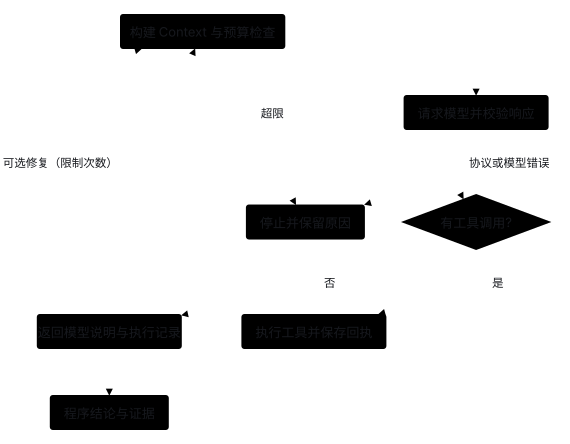
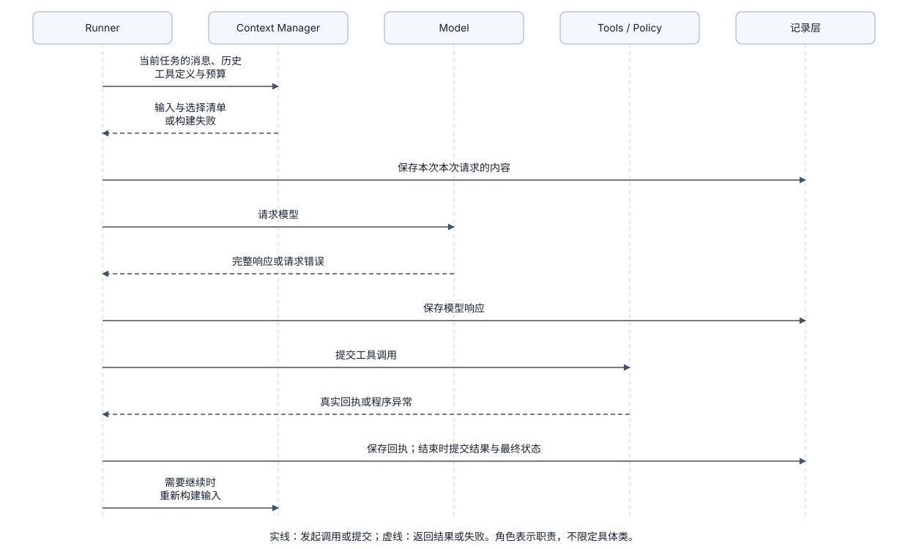

Loop / Runner：控制一次任务怎样继续和停止
1. 问题起点：如何控制一次任务何时继续、何时停止？
当用户提交一个需要多步操作的任务时，程序需要一个有明确停止条件的状态机来驱动整个过程。这就是 Loop / Runner 的核心职责：
- 构造输入并请求模型：收集系统指令、可用历史、当前消息与工具定义，调用模型接口。
- 判断是否继续循环：若模型提出工具调用，则交由工具系统执行，保存真实回执后发起下一轮模型请求；若模型直接返回有效回答，则结束循环并返回结果。
- 强制守住预算与错误边界：在每一步检查请求步数上限（
max_steps）、模型异常或取消信号，防止死循环或带病继续。
Loop：继续、停止与受控修复流程（通用控制模式 · 当前尚未接入自动验收修复）

在设计 Runner 时，必须严格区分三个不同层面的“结束”：
- 单次模型请求完成：模型服务正常返回了一次响应（可能包含工具调用，任务尚未结束）。
- Runner 循环正常结束：模型不再调用工具并给出最终回答（代表对话交互闭环完成）。
- 业务成果通过验收：生成的报告或代码通过了外部检查器的验证（不能仅凭模型口头说“已完成”就认定成果合格）。
2. 与相关模块的协作边界
Runner 是串联各核心模块的调度中枢，但它只负责“何时推进下一步”，具体工作委托给各专职模块：
- 加载记忆与组装上下文（Runner ↔ Memory / State / Context）：启动时从工作区锁定项目长期记忆快照（Memory），运行期从会话模块读取已完成历史，连同工具 Schema 与输入预算交给上下文管理器（Context Manager）组装为本轮请求视图。
- 请求模型（Runner → Model）：提交
ModelRequest，获取ModelResponse。若模型报错、截断或拒答，Runner 记录失败并立即停止。 - 分发工具调用（Runner → Tools ↔ Policy / Extensions）：将
ToolCall交给工具系统（支持本地内置工具与 MCP 外部扩展工具）校验、经 Policy 授权后执行。普通工具执行失败或被 Policy 拒绝时，生成真实ToolResult回执交回模型，不会直接导致整个任务崩溃。 - 持久化记录与断点恢复（Runner ↔ State）：每步的用户提问、模型响应、工具回执与任务结束状态均实时写入会话记录；遭遇断电、OOM 或意外中断重启时，Runner 读取检查点（Checkpoint）并在核对未闭合动作状态后安全恢复继续。

3. 控制流有哪些方案
这里比较下一步由谁决定。当前采用 A 的自主工具循环；B 的计划、C 的分层执行和 D 的显式业务图尚未实现。持久记录、上下文预算和权限判断可以与这些控制流分别组合。
A. 自主工具循环
程序只固定“模型 → 工具 → 模型”的骨架，模型根据实际反馈选择下一步。实现简单，适合路径未知、需要搜索和试错的任务。
它的代价是路径不稳定，可能重复探索或提前结束。需要限制 Step、工具次数、时间和费用，并在外部设置验收条件。阶段 0 的单循环采用这一基本控制方式；其他预算与验收按需求再增加。
B. 单循环内的可更新计划
增加结构化计划或 update_plan 工具，让模型维护目标、步骤和当前进度，实际动作仍在同一个循环中选择。它主要改善长任务状态和用户可见进度，不要求每个步骤单独调用一个 Agent。
收益是可以明确展示依赖和未完成工作；代价是计划可能过时，模型也可能错误勾选完成。计划状态应与实际工具回执、检查结果分开，不能用“所有 Todo 已完成”代替验收。
C. 独立规划器与执行器
规划器先生成带依赖的任务，执行器领取当前任务，根据执行反馈调整计划。实现需要计划版本、步骤状态、结果格式和调整计划的条件。
它适合步骤较稳定、执行者能力不同的任务，也方便分别优化规划与执行。代价是额外调用、交接时遗漏信息，以及计划未及时更新；若每个小改动都重做全计划，成本可能高于自主循环。可以先尝试 B，再根据真实失败判断是否需要独立角色。
D. 显式 Graph 或业务状态机
程序定义必要节点和转移条件，例如“读资料 → Agent 生成候选 → 检查 → 用户批准 → 发布”。节点内部仍可运行自主 Loop。Graph 决定业务步骤的先后和转移条件，Loop 在节点内部根据模型反馈选择具体操作。
它适合固定审批、条件路由和保存状态后等待；代价是状态 Schema、节点版本和恢复时的处理规则。Graph 不要求多个 Agent，也不会自动提供沙箱隔离，或保证重复执行不会产生额外修改。控制流与持久执行的关系见 State。
| 方案 | 决策主要在哪里 | 适合的问题 | 主要代价 |
|---|---|---|---|
| 自主循环 | 模型逐步决定 | 路径未知的短任务 | 难预测动作数量 |
| 循环内计划 | 模型决策加结构化进度 | 同一目标的较长任务 | 计划更新与事实核验 |
| 规划器和执行器 | 分层决策与反馈 | 可分解、依赖明确的任务 | 额外调用和交接 |
| Graph | 程序控制关键步骤之间的转移 | 固定业务流程和审批 | 状态、节点与恢复维护 |
这些方案可以嵌套，不是从“低级”到“高级”的产品排名。Anthropic 控制模式也区分工作流与动态 Agent；选择依据应是任务的可预测部分和实际失败。
4. 真实实现怎样组织循环
OpenAI Agents SDK，官方文档。 运行说明公开的骨架是请求当前 Agent 的模型、执行工具、按 Handoff 切换执行者，直到得到最终回答。流式运行改变接收和处理事件的方式，不改变这个基本循环。这里的“最终”仍是 SDK 的停止条件，应用可以另外检查业务结果。
LangChain / LangGraph，官方文档。 create_agent 的中间件运行在其编译后的 Graph 中，可在模型请求前后和工具调用前后加入控制逻辑；整个 Agent 还可以放入外层业务图。它展示了“内部由模型选择动作、外层由程序决定步骤顺序”的组合。
AgentScope Java，指定版本的官方文档。 Plan Mode 将计划阶段与执行阶段显式区分，并保存模式状态。可以借鉴的是让模式影响实际工具授权，而不是只在 Prompt 中要求模型“现在只读”。
5. 验证循环放在哪里
终止后检查最容易理解：模型给出最终说明，检查器读取产物，程序报告指定检查通过或失败。可以先实现这种终止后检查，再考虑循环内修复。
检查后自动修复在失败时生成结构化反馈，再进入执行循环。反馈应包含检查名、目标版本、实际错误和允许修复范围。修复必须继续消耗原任务的总预算，另设次数上限，禁止通过新建无限 Run 绕过限制。
过程内检查让某些动作完成后立即检查当前步骤必须满足的条件，例如写入配置后解析 Schema。它可以更早发现问题，但局部通过不等于最终目标通过。三种检查可以组合，检查对象和时刻要记录清楚。
6. 停止判定、无进展检测与崩溃恢复状态机
A. 停止原因分流与无进展检测
建议区分普通工具失败、模型错误、预算耗尽、取消、状态损坏和验收失败。普通工具失败可以作为结果交回模型纠正；状态损坏则应由程序停止，而不是让模型猜测下一条数据库操作。
重复调用不总是错误：轮询外部任务可能连续读取同一资源。无进展判断应综合工具、规范化参数、结果摘要、外部版本和重复次数，配合等待间隔；只比较参数容易误伤正常等待。对长期等待，更合适的做法是保存等待条件并释放执行者，参见编排。
B. 异常崩溃后的 Runner 恢复状态机（Crash Resumption）
在生产级长任务或自动化代理中，进程可能因断网、OOM 或宿主机重启在任意步骤中途夭折。当通过恢复入口重启任务时，Runner 不能盲目从头重新发起模型请求，而必须遵循基于检查点的受控恢复状态机（具体存储机制详见 Recovery 模块原理 与 State 模块中断安全恢复）：
- 加载中断点上下文：Runner 从 State 模块读取未结束任务的最新检查点（Checkpoint）与未闭合的工具调用 ID（Invocation ID）。
- 核对动作执行状态：
- 若状态为
completed：直接复用已有ToolResult，不重新执行工具，直接构造下一轮ModelRequest。 - 若状态为
not_dispatched或只读动作：重新提交当前 Policy 授权，获准后安全重新执行。 - 若状态为
unknown且带物理副作用（如写文件）：Runner 必须阻断自动推进，先通过磁盘探查或幂等凭据确认动作是否已生效；若无法客观判定，暂停循环并抛出中断异常，等待人工审查介入（HITL）。
- 若状态为
- 严守原任务总预算：恢复后的循环继续沿用该任务剩余的
max_steps步数上限与 Token 预算，严禁通过反复崩溃重启绕过步数限制。
7. 本项目当前选择与未实现范围
8. 后续练习与期望达到的效果
后续若引入“结果检查 + 受限自动修复”闭环，可在终止后运行确定性检查器，失败时允许模型在原任务剩余预算与权限内进行一次修复。
期望达到的效果：
- 预算共享不超支：自动修复过程与初始执行共用同一个总步数上限、时间限制与 Policy 权限，绝不通过无限新建子循环绕过预算。
- 完整保留失败轨迹：初次生成结果、检查器报错证据、修复工具调用与最终结论全部按顺序写入会话记录。
- 客观判定通过状态：最终是否合格完全由检查器结果决定，绝不因模型声称“已修好”就跳过或覆盖检查结论。